mlquantify: A Python package for Quantification
The ultimate Python toolkit for class prevalence estimation. Robust methods, advanced metrics, and seamless scikit-learn integration.
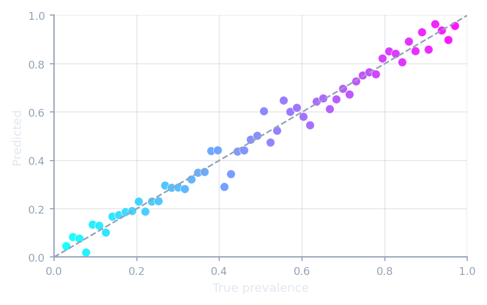
Counting methods
Count the classifier's predictions, then adjust for shift.
CC · ACC · PCC · MS · T50 · FM
API reference →
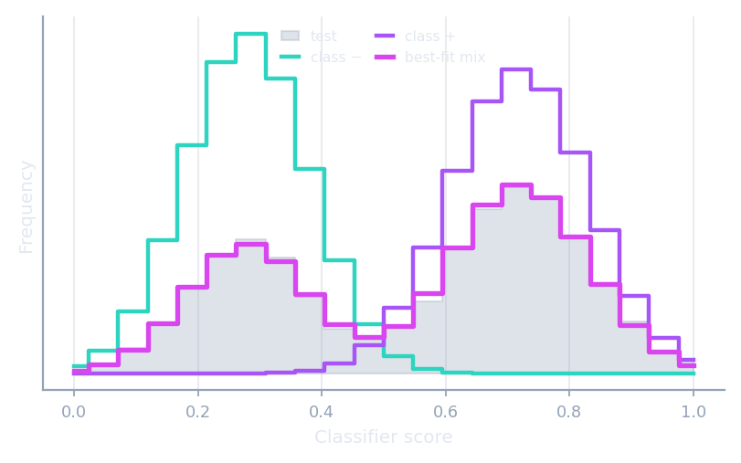
Distribution matching
Match the test distribution with a mixture of class distributions.
HDy · DyS · SORD · SMM · EDy
API reference →
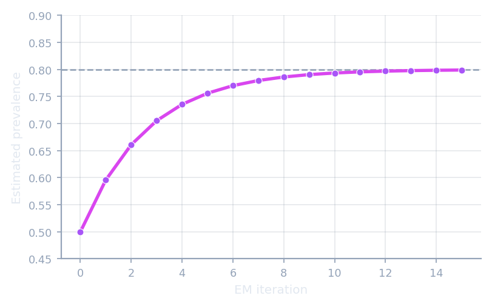
Likelihood · EMQ
Maximise the test-set likelihood under prior-probability shift.
EMQ · CDE · MLPE
API reference →
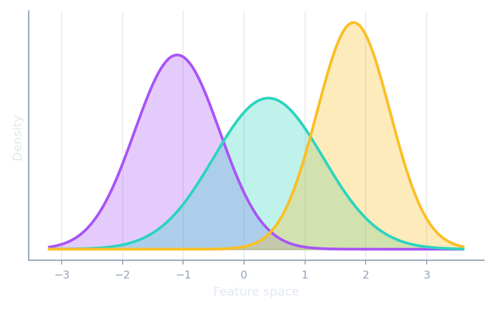
Representations
Pluggable feature spaces that matching methods compare in.
Histogram · KDE · Distance · KernelMean
API reference →
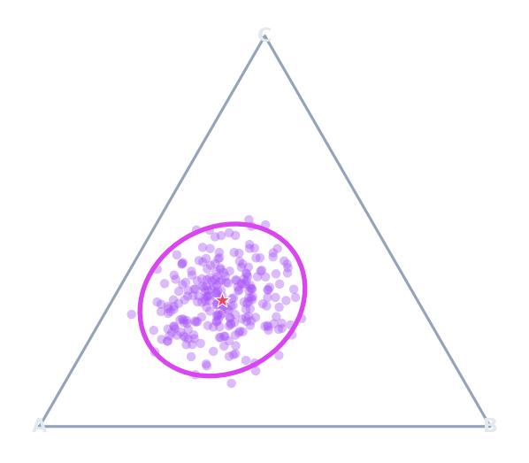
Confidence regions
Turn a point estimate into intervals or a simplex region.
ConfidenceInterval · ConfidenceEllipseSimplex
API reference →
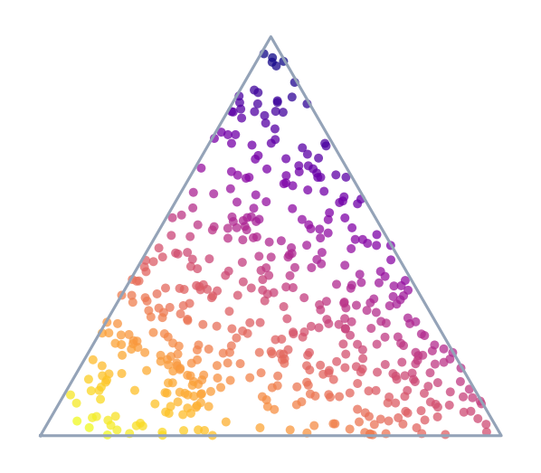
Sampling protocols
Sample many test prevalences to stress-test under shift.
APP · NPP · UPP · PPP · GridSearchQ
API reference →
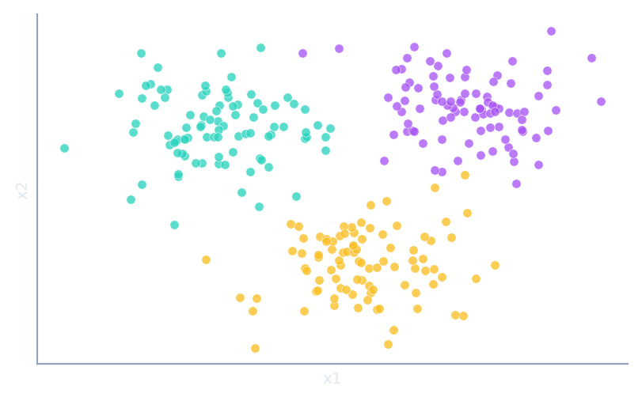
Synthetic datasets
Generate labelled bags under prior, covariate and concept shift — with the true prevalences.
make_quantification
API reference →
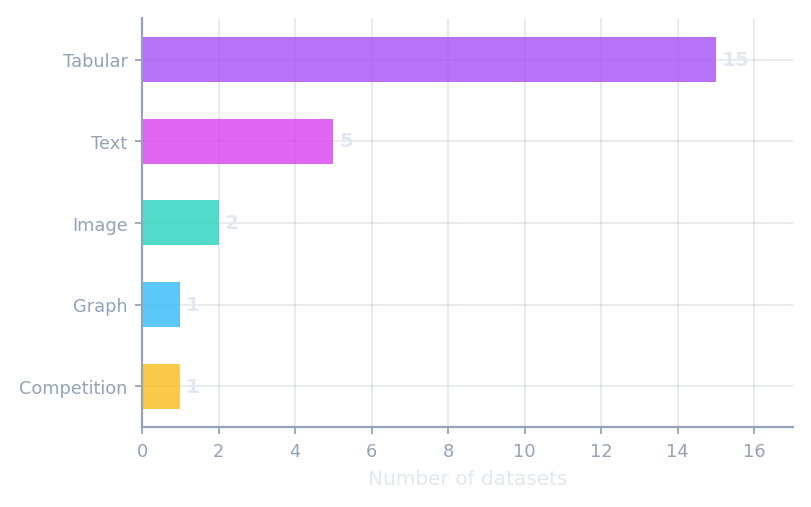
Real-world datasets
Ready-to-use benchmark datasets across text, tabular, image and graph domains.
fetch_newsgroups20 · fetch_imdb · fetch_mnist_usps · fetch_dry_bean · fetch_lequa2024
API reference →
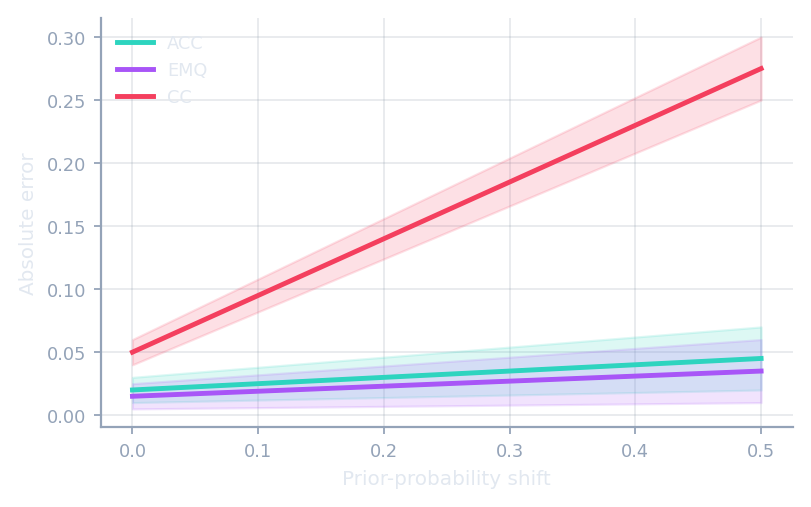
Quantification metrics
Error measures built for prevalence, not individual labels.
AE · RAE · KLD · NMD · RNOD
API reference →
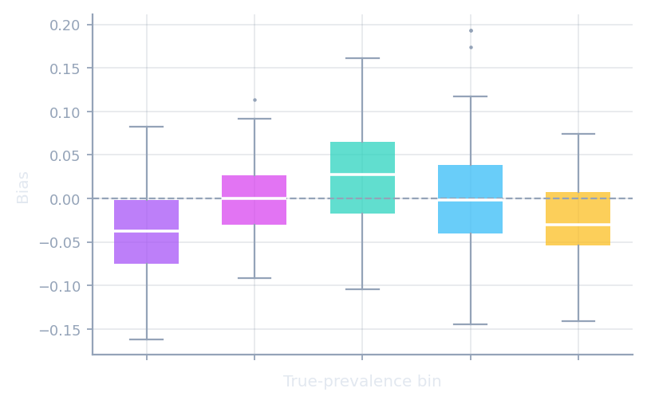
Visualization
One-line scikit-learn-style diagnostic plots.
DiagonalDisplay · BiasDisplay · ErrorByShiftDisplay
API reference →
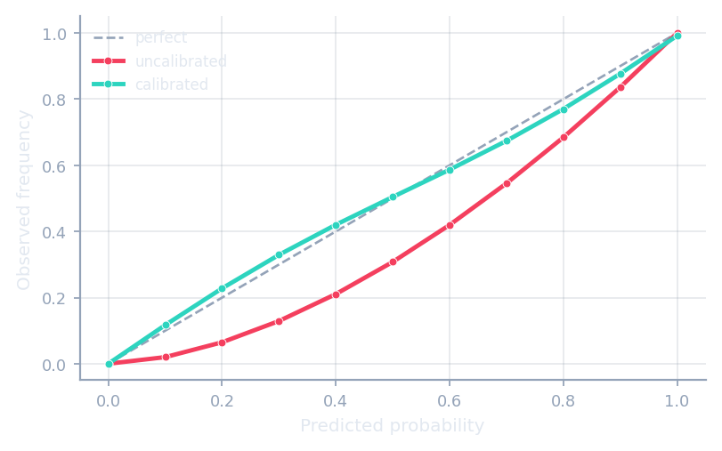
Calibration
Recalibrate classifiers and quantifiers for sharper estimates.
ClassifierCalibrator · QuantifierCalibrator
API reference →
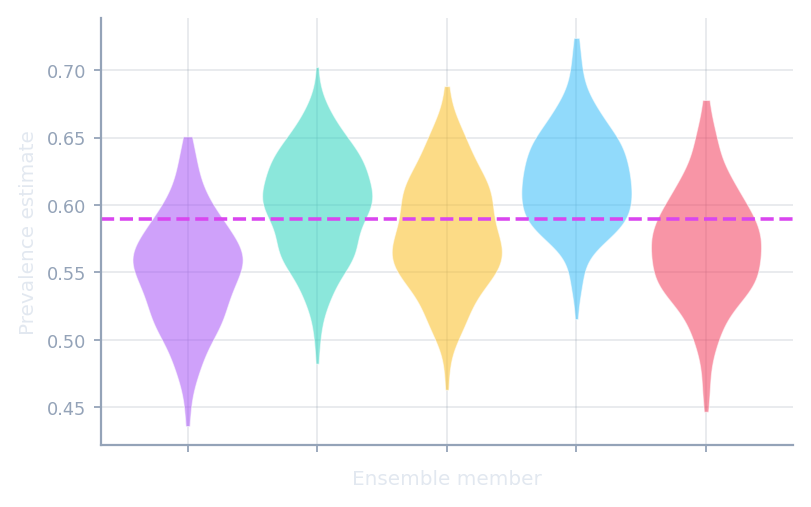
Meta & ensembles
Compose resampling and ensembles around any quantifier.
AggregativeBootstrap · EnsembleQ · QuaDapt
API reference →